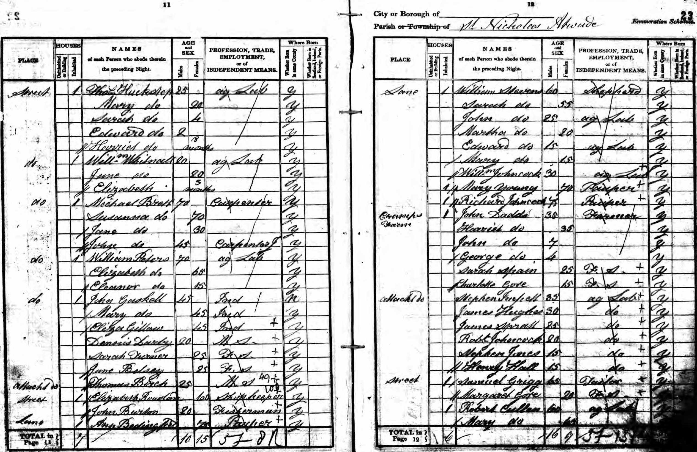

Mary Peters (née Scott) c1755 - 1842
[ Home ] | [ Calendar ] | [ Surnames Index ] | [ Errors ] | [ Family History ]Mary Scott, the 4 times great-grandmother of Nigel Horne, was born in Smeeth, Kent, England c. 17551 and married Henry Peters (with whom she had 9 children: Mary, Sarah, Henry, Elizabeth, Charles, Jane, William, Benedicta and Harriet) at St Mary the Virgin Church in Smeeth on 6 Dec 17773. In 1841, she was living in Sandgate, Kent, England1 which is where she died on 19 Jan 18422 (old Age). She was buried at St Martins, Cheriton, Kent on 30 Jan 1842.
Children
- Mary was born in 1780
- Sarah was born c. 1781
- Henry was born in Apr 1781
- Elizabeth was born in Feb 1786
- Charles was born on 13 Apr 1788
- Jane was born in 1790
- William was born in 1792
- Benedicta was born in 1795
- Harriet was born in 1797
Citations
- 1841 England Census Online publication - Provo, UT, USA: The Generations Network, Inc., 2006.Original data - Census Returns of England and Wales, 1841. Kew, Surrey, England: The National Archives of the UK (TNA): Public Record Office (PRO), 1841. Data imaged from the National
- England & Wales, FreeBMD Death Index: 1837-1915 Online publication - Provo, UT, USA: The Generations Network, Inc., 2006.Original data - General Register Office. England and Wales Civil Registration Indexes. London, England: General Register Office. © Crown copyright. Published by permission of the Cont
- England Marriages 1538-1973 - Findmypast
Media
Mary Scott - death certificate

1841 UK Census

Henry Peters - Mary Scott - Marriage Banns (Smeeth)

1841 England, Wales & Scotland Census Transcription - GBC-1841-0014078783
England & Wales deaths 1837-2007 Transcription - BMD-D-1842-1-AZ-000616-130
England Marriages 1538-1973 - R_847912303/2
Family Tree

Map
Generated by ged2site. Last updated on Jul 3, 2024
Known Issues
Burial date (30 Jan 1842) has no citations